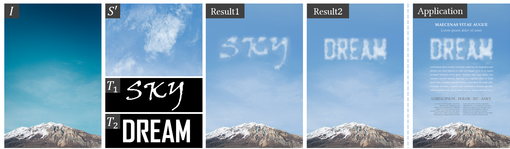
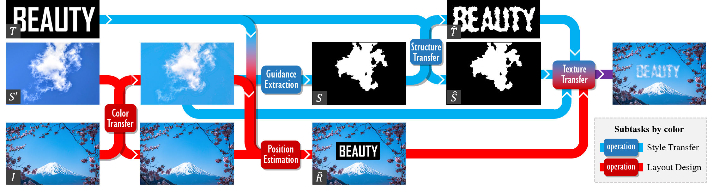
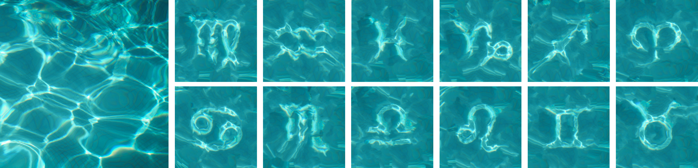
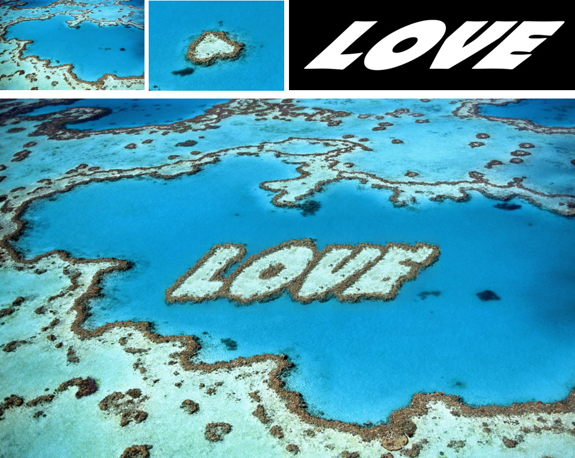
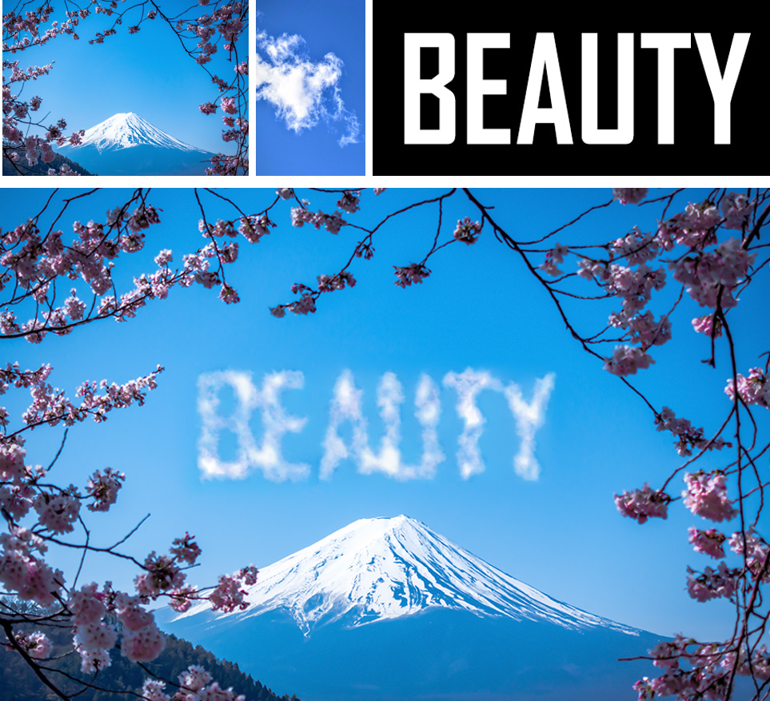
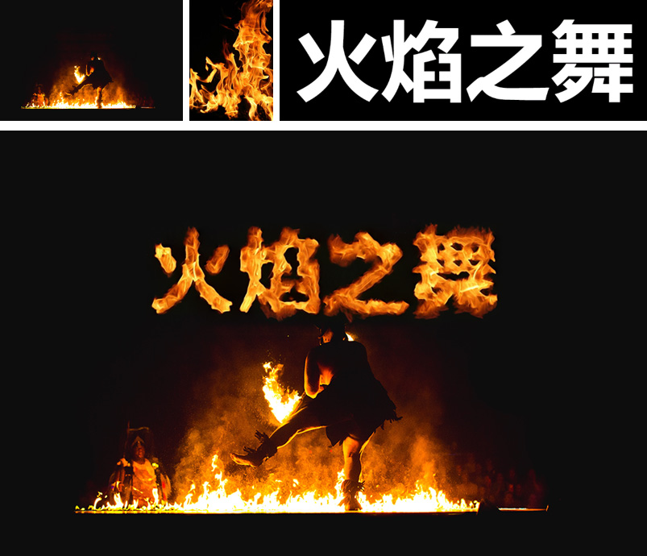

Context-Aware Text-Based Binary Image
Stylization and Synthesis

Figure 1. Our method provides an aesthetic driven automatic tool to design artistic typography, creating original and unique artworks. Given a souce style image S' and any target text T, our algorithm transfers multiple style modalities from S' to T, and seamlessly embeds the stylized text in a reasonable position of the backgound image I. Application (right): Computer aided poster design.
Abstract
In this work, we present a new framework for the stylization of text-based binary images. First, our method stylizes the stroke-based geometric shape like text, symbols and icons in the target binary image based on an input style image. Second, the composition of the stylized geometric shape and a background image is explored. To accomplish the task, we propose legibility-preserving structure and texture transfer algorithms, which progressively narrow the visual differences between the binary image and the style image. The stylization is then followed by a context-aware layout design algorithm, where cues for both seamlessness and aesthetics are employed to determine the optimal layout of the shape in the background. Given the layout, the binary image is seamlessly embedded into the background by texture synthesis under a context-aware boundary constraint. According to the contents of binary images, our method can be applied to many fields. We show that the proposed method is capable of addressing the unsupervised text stylization problem and is superior to state-of-the-art style transfer methods in automatic artistic typography creation. Besides, extensive experiments on various tasks, such as visual-textual presentation synthesis, icon/symbol rendering and structure-guided image inpainting, demonstrate the effectiveness of the proposed method.
Framework

Figure 2. Overview of the proposed algorithm. Our method consists of two subtasks: style transfer for stylizing the target text-based binary image T based on a style image S' and layout design for synthesizing the stylized image into a background image I. We first extract a guidance map S from S' to establish a mapping with T. Then a structure adjustment is adopted to bridge the structural gap between T and S. Under the guidance of S-hat and T-hat, the stylized image is generated via texture transfer. To embed the target shape of T into the background image, we develop a method to determine the image layout R-hat. The colors of I and S' are adjusted and the contextual information of I is used to constrain the texture transfer for visual seamlessness. This flowchart gives an example of synthesizing a visual-textual presentation when T is a text image. The operation modules are colored to show the subtasks they belong to, where dark blue and dark red represent style transfer and layout design, respectively.
Resources
Citation
@article{Yang2018Context, author={Yang, Shuai and Liu, Jiaying and Yang, Wenhan and Guo, Zongming}, journal={IEEE Transactions on Image Processing}, title={Context-Aware Text-Based Binary Image Stylization and Synthesis}, year={2018}, volume={PP}, number={99}, pages={1-13}, doi={10.1109/TIP.2018.2873064} }
Selected Results

Figure 3. Rendering rippling Zodiac symbols using a photo of water on the left.
 |
 |
 |
| barrier reef | cloud | flame |
Figure 4. Visual-textual presentation synthesis. For each group, three images in the upper row are I, S' and T, respectively. The lower one is our result.
Reference
[1] A. Hertzmann, C. E. Jacobs, N. Oliver, B. Curless, and D. H. Salesin. Image analogies. ACM Conference on Computer Graphics and Interactive Techniques, 2001.
[2] A. J. Champandard. Semantic style transfer and turning two-bit doodles into fine artworks. arXiv:1603.01768, 2016
[3] S. Yang, J. Liu, Z. Lian, and Z. Guo. Awesome typography: Statistics-based text effects transfer. CVPR 2017.
[4] A. A. Efros and W. T. Freeman. Image quilting for texture synthesis and transfer. ACM Conference on Computer Graphics and Interactive Techniques, 2001.
[5] L. A. Gatys, A. S. Ecker, and M. Bethge. Image style transfer using convolutional neural networks. CVPR 2016.
[6] C. Li and M. Wand. Combining markov random fields and convolutional neural networks for image synthesis. CVPR 2016.